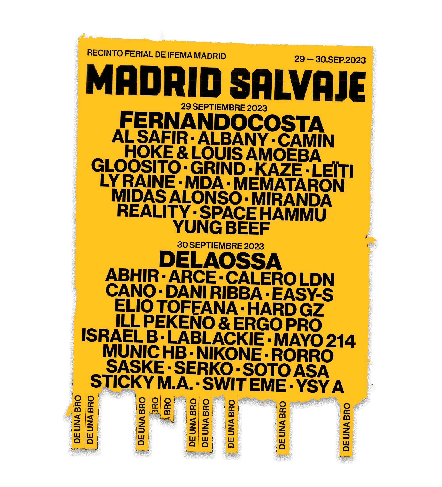

Madrid Salvaje
Género: Urbano / Rap
Ubicación: Recinto Ferial IFEMA, Madrid.
Descripción: Madrid Salvaje se ha consolidado como el festival de referencia de la escena urbana en España. Un espacio donde el rap, el trap y el reggaetón se fusionan con la cultura del graffiti y el skate.
Cartel Destacado: Fernandocosta, Natos y Waor, Delaossa, Trueno y muchos más por confirmar.
Servicios:
- Zona Gastronómica con Foodtrucks internacionales.
- Pistas de Skate y exhibiciones de arte urbano en vivo.
- Área de descanso y recarga de dispositivos.
Horarios: Apertura de puertas a las 16:00h. Cierre de escenarios a las 02:30h.
Recomendación: Acude con calzado cómodo y utiliza el Metro de Madrid (Línea 8) para evitar problemas de aparcamiento.
Comprar ahora →